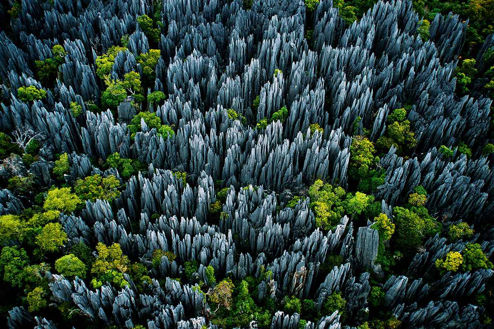

Hay guys, Bertemu lagi nih. Terimakasih loh sudah mau mampir ke website saya. Sudah merelakan waktu anda untuk berkunjung kemari. Untuk anda yang hobinya dunia maya, ini nih pas banget tempat untuk menimba ilmu. Tempat yang cocok untuk kalian. Semua informasi saya menyediakannya di sini, dan itu kusus untuk anda.

Dari sekian banyak pilihan liburan, animo wisata ke hutan masih kalah dibandingkan lainnya. Selain memerlukan energi yang lebih besar, seringkali medannya lebih sulit dan butuh persiapan yang tak main-main.
Meski begitu, berwisata ke hutan bukan suatu pilihan yang buruk. Bahkan beberapa tempat memiliki keunikan yang tak biasa, sehingga kamu harus ke sana sekali dalam hidupmu. Melansir dari thisisinsider.com, inilah 10 wisata hutan terbaik.
- Black Forest - Jerman
- Hutan Bambu Sagano - Jepang
- Taman Nasional Tijuca - Brazil
- Hutan Monteverde - Costa Rica
- Cagar Alam Tsingy de Bemaraha - Madagaskar
- Taman Nasional Sequoia - Amerika Serikat
- Hutan Crooked - Polandia
- Hutan Otzarreta - Spanyol
- Hutan Hallerbos - Belgia
- Taman Nasional The Great Trossachs - Inggris
- Taman Nasional Tanjung Puting - Indonesia
Bukan hanya arsitekturnya saja yang cantik, Jerman juga mempunyai hutan cantik di Baden-Warttemberg. Hutan seluas 7.500 kilometer ini mempunyai perpaduan lengkap yang terdiri dari lanskap alam, pedesaan, air terjun, dan kastil.
Sayangnya di balik keindahannya tersebut, Black Forest lebih dikenal sebagai salah satu hutan paling menyeramkan di dunia. Pasalnya mulai pukul 14.00-08.00, hutan benar-benar gelap gulita.
Hutan bambu di Kyoto, Jepang, ini tentu sudah gak asing lagi di telinga kita. Salah satu tempat paling populer di Kyoto ini tampak sangat asri dan fotogenik. Bahkan untuk bisa masuk ke tempat ini, kamu tidak perlu membayar tiket.
Di samping hutannya yang masih sangat asri, kamu juga bisa menemukan kuil yang kerap digunakan untuk berdoa. Beragam souvenir dan kuliner juga menarik untuk dijadikan oleh-oleh. Harganya dibanderol mulai Rp 12-36 ribu
Taman nasional Tijuca berada di Rio de Janeiro yang mempunyai area seluas 3.200 hektare. Inilah taman nasional pertama di dunia yang dijadikan proyek reboisasi besar-besaran. Awalnya, kawasan hutan yang berada di bawah landmark Patung Kristus Penebus ini merupakan kawasan industrial.
Menariknya dari Taman Nasional Tijuca, kamu bisa berkeliling menggunakan mobil atau kendaraan yang disediakan pengelola. Selain flora dan fauna, kamu bisa menemukan beberapa air terjun indah, seperti Cascatinha de Taunay, Cascata Gabriela, dan Cascata Diamantina.
Tempat ini merupakan salah satu habitat paling langka di bumi. Hutan seluas 26 ribu hektare ini mempunyai ribuan spesies tumbuhan dan hewan langka. Ada pula hewan khas Costa Rica, seperti monyet, katak pohon, dan hering raja.
Sebagai tempat wisata, hutan ini telah mempunyai banyak fasilitas, seperti outbond, toko, halte bus, restoran, hotel, dan sebagainya. Kamu cukup membayar 14 dollar AS atau sekitar Rp 195 ribu untuk tiket masuknya.
Sebagai pulau terbesar ke-4 di dunia, Madagaskar mempunyai cagar alam yang sangat memukau. Cagar alamnya dekat dengan pantai barat Madagaskar, berada di kawasan Melaky.
Tempat ini mempunyai keunikan geografi yang memadukan hutan bakau dengan populasi lemur, serta burung liar. Saking menawannya, Cagar Alam Tsingy de Bemaraha sudah menjadi bagian dari Situs Warisan Dunia UNESCO sejak 1990.
Kawasan hutan yang berada di California ini mempunyai pohon raksasa terbesar di dunia. Maskotnya bernama "General Sherman", sebuah pohon yang berusia lebih dari 2.000 tahun. Tingginya mencapai 83,3 meter dan diameternya sekitar 11,1 meter, dibutuhkan enam orang untuk melingkari pohon tersebut.
Taman nasional ini sudah dilengkapi area kemah, museum, dan restoran. Tersedia pula shuttle bus yang dikenakan biaya sekitar 15 dollar AS atau sekitar Rp 208 ribu.
Masih menjadi sebuah pertanyaan, mengapa pohon-pohon di hutan Crooked mempunyai batang melengkung. Pohon pinus di sini sudah ditanam sejak 1930, tetapi ada sekitar 400 pohon yang melengkung secara alami.
Hutan yang terletak di Basque, Spanyol, ini merupakan bagian dari taman nasional Gorbeia. Kawasan ini dianggap cukup misterius, terkadang kabut tebal menyelimuti hutan Otzarreta secara tiba-tiba. Pohon-pohonnya begitu besar dengan berbagai bentuk yang unik.
Bak dalam dunia dongeng, hutan Hallerbos ini sangat menakjubkan ketika musim semi. Jika di Jepang muncul bunga sakura, kawasan hutan Hallerbos di Belgia akan dipenuhi bunga bluebells (si lonceng biru). Datanglah lebih awal atau hindari long weekend untuk bisa puas berlibur ke sini.
Taman nasional di Skotlandia ini berada di sepanjang Bonnie Banks o' Loch Lomond. Sebuah lokasi yang dijadikan kawasan konservasi skala besar yang terus berkembang hingga saat ini.
Saat ini areanya hanya seluas 2.446 hektare, masih ada 1.973 hektare untuk pohon yang akan tumbuh. Sebagai tempat edukasi, taman nasional ini telah dikunjungi 500 pelajar setiap harinya.
Meski tak ada dalam daftar dari thisisinsider.com sebagai hutan terindah, Indonesia memiliki banyak hutan yang menakjubkan. Salah satunya Taman Nasional Tanjung Puting di Kalimantan Tengah. Tanjung Puting sering disebut sebagai Amazon-nya Indonesia.
Habitatnya yang sangat mendukung menjadikan taman nasional tersebut dianggap daerah paling penting di Asia Tenggara. Tempat yang sangat pas untuk pelestarian primata, burung, reptil, dan ikan. Salah satu primadonanya adalah orang utan.
Nah, itu dia guys informasi yang bisa saya berikan kepada kalian tentang 10 Hutan Paling Indah di Dunia, Punya Indonesia Gak Kalah Keren dalam kesempatan kali ini. Semoga tautan ini bermanfaat bagi kalian semua. Dan yang sudah berkunjung ke Day-Dt semoga selalu di mudahkan dalam urusannya masing - masing. Oke!
Ok Guys Terimakasih atas kunjungannya ke website kami. Semoga website ini dapat membantu kalian semua dan terimakasih atas kunjungannya website ini menjadi lebih berguna lagi jika kalian tetap menjadi view kami. Jangan Pernah Bosan Untuk Berkunjung Kembali.